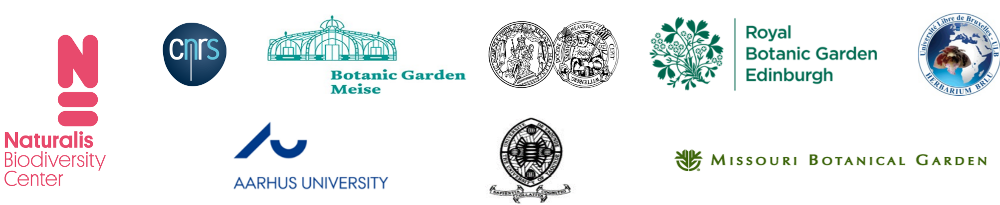
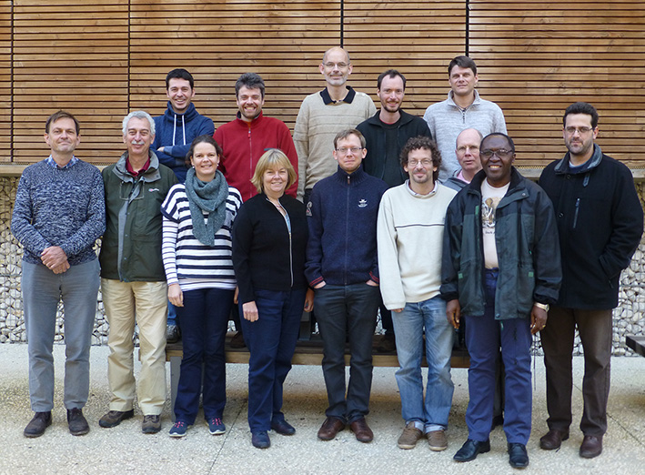
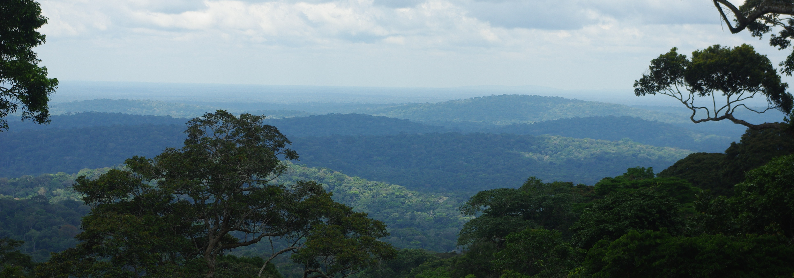

This work is licensed under a Creative Commons Attribution 4.0 International License.

Welcome to the RAINBIO project webpage. Here you will find information of the members and outputs of RAINBIO and its different publications. For info on the project per se please see here.
RAINBIO ran from May 2014 to December 2016. See below for consortium details.
On this page you will find:
The major output of RAINBIO is the RAINBO mega database.
The RAINBIO mega database contains high quality georeferenced occurrences of vascular plants from sub-Saharan tropical Africa. It is a compilation of thirteen public and non-public databases made available under the RAINBIO project funded by CESAB. The database was filtered, quality-checked and verified by the CESAB RAINBIO Consortium. The database holds 610 117 georeferenced occurrences for 25,356 species of vascular plants and 29,659 taxa (including subspecies and varieties), 3,158 genera and 273 families. The database follows the Darwin Core standard. The RAINBIO database is subject to be updated in the future.
The RAINBIO database is available here
The database comes in two formats: a .csv file and and R.data project file. You can open the R.data file directly in R and use the available custom functions to extract useful data and produce distribution maps.
Details on the construction of this mega database can be found in the open access article in Phytokeys. (please read the terms of use below too)
Please cite this article when using RAINBIO:
Dauby G., Zaiss R., Blach-Overgaard A., Catarino L., Damen T., Deblauwe V., Dessin S., Dransfield J., Droissart V., Duarte M.C., Engledow H., Fadeur G., Figueira R., Gereau R.E., Hardy O.J., Harris D.J., de Heij J., Janssens S.B., Klomberg Y., Ley A.C., Mackinder B.A., Meerts P., van de Poel J.L., Sonké B., Sosef M.S.M., Stévart T., Stoffelen P., Svenning J.-C., Sepulchre P., van der Burgt X.M., Wieringa J.J., & Couvreur T.L.P. (2016) RAINBIO: a mega-database of tropical African vascular plants distributions. PhytoKeys, 74, 1–18.
Copyright or other rights in material included within this portal may belong to the third parties. Content provided within this portal is accessible under CC-BY license (https://creativecommons.org/licenses/by/4.0/) unless mentioned otherwise. If used, the above article must be correctly cited. Requests for further authorisation should be directed to cesab@fondationbiodiversite.fr or thomas.couvreur@ird.fr.
By accessing content through this portal, you accept all risks and responsibility for losses, damages, costs and other consequences (direct or indirect) resulting directly or indirectly from using this site or portal and any information or material available from it. Web links to this site from external, third party websites should not be constructed as implying any relationships with and/or endorsement of the external site or its content. If you have any concerns about the veracity of the data or website content, please inform us via email.
This work is licensed under a Creative Commons Attribution 4.0 International License.
RAINBIO is a compilation of 13 databases. The metadata associated to these databases are available via the following links:
4) Botanic Garden Meise database
8) Transect data from Gabon database
11) Instituto de Investigação Científica Tropical (LISC) database
13) Tropicos® Missouri Botanical Garden for central Africa database
A timelapse animated view of the year of the first botanical collection within 0.5 degree cells across tropical Africa.
RAINBIO, at its creation in 2013, is an international consortium of 16 members from 13 institutes and 6 countries. Members include:
Couvreur Thomas (PI): Institut de Recherche pour le Développement, Montpellier, France
Dauby Gilles (post-doc of the project 2014-2016): currently University Libre de Bruxelles, Brussels, Belgium
Blach-Overgaard Anne: Aarhus University, Aarhus, Denmark
Bonaventure Sonké: University of Yaoundé I, Yaoundé, Cameroon
Deblauwe Vincent: Curently University of California (UCLA), based in Yaoundé, Cameroon
Droissart Vincent: Institut de Recherche pour le Développement, Montpellier, France
Hardy Olivier: University Libre de Bruxelles, Brussels, Belgium
Harris David: Royal Botanic Gardens, Edinburgh, U.K.
Janssens Steven: Botanic Gardens Meise, Meise, Belgium
Ley Alexandra: Halle University, Halle, Germany
Mackinder Barbara: Royal Botanic Gardens, Kew currently Royal Botanic Gardens, Edinburgh, U.K.
Sepulchre Pierre: Centre National de Recherche Scientifique (CNRS), Paris, France
Sosef Marc: Botanic Gardens Meise, Meise, Belgium
Stévart Tariq: Missouri Botanic Gardens & Université Libre de Bruxelles, Brussels, Belgium
Svenning Jens-Christian: Aarhus University, Aarhus, Denmark
Wieringa Jan: Naturalis Biodiversity Center & Wageningen University, Leiden, The Netherlands
Zaiss Rainer: Institut de Recherche pour le Développement, Montpellier, France
Dessein Steven: Botanic Gardens Meise, Meise, Belgium

Part of the the RAINBIO group in December 2015 in Aix en Provence, CESAB.
Left to right top row: Steven Janssens, Olivier Hardy, Jens-Christian Svenning, Vincent Deblauwe, Thomas Couvreur
Left to right bottom row: Jan Wieringa, Marc Sosef, Anne Blach-Overgaard, Barbara Mackinder, Gilles Dauby, Vincent Droissart, David Harris, Bonaventure Sonké, Tariq Stévart.
Missing: Rainer Zaiss, Alexandra Ley, Steven Dessin, Pierre Sepulchre.
ConR (Conservation with R) is a R package that enables rapid batch preliminary conservation assessments following Criteria B of the IUCN guidelines. ConR uses species lists with georeferenced data. For example, ConR was able to process data from over 18,000 species in less than 24 hours. ConR outputs different statistics used for IUCN assessments as well as distribution maps (see disclaimer below).
This package is useful in the era of "Big Data" to rapidly generate lists of threatened species from different regions or across large areas (e.g. continents) using, for example, mega databases such as RAINBIO. ConR also provides ways to visualize the results in space: the generation of richness maps and proportion of threatened species maps, etc. A detailed vignette is provided with the package, allowing step by step guidelines to use ConR.
For "one-by-one" assessments of species, one could also use the excellent online tool GEOCAT.
The assessments generated by ConR are termed preliminary and in no case can be suggested as final assessments for submission to the IUCN. For full assessments please follow the detailed guidelines to red listing provided on the IUCN website. Also the results will be dependent on the quality of your database (precision and accuracy of georeferenced database). Several R packages are available for biodiversity georeferencing quality checks and could be used prior to input in ConR. (speciesgeocoderR; Biogeo).
ConR is available on the CRAN web page. ConR comes with a "how to do" vignette available here and an example dataset.
Please cite this article if you use ConR (open access):

Tropical rain forest in Gabon, view from Belinga mountain.
This dataset was used to study several broad questions related to the patterns and evolution of the tropical African flora.
Sosef M.S.M., Dauby G., Blach-Overgaard A., van der Burgt X., Catarino L., Damen T., Deblauwe V., Dessein S., Dransfield J., Droissart V., Duarte M.C., Engledow H., Fadeur G., Figueira R., Gereau R.E., Hardy O.J., Harris D.J., de Heij J., Janssens S., Klomberg Y., Ley A.C., Mackinder B.A., Meerts P., van de Poel J.L., Sonké B., Stévart T., Stoffelen P., Svenning J.-C., Sepulchre P., Zaiss R., Wieringa J.J., Couvreur T.L.P. 2017. Exploring the floristic diversity of tropical Africa. BMC Biol. 15:15.
Droissart, V., Dauby, G., Hardy, O.J., Deblauwe, V., Harris, D.J., Janssens, S., Mackinder, B.A., Blach-Overgaard, A., Sonké, B., Sosef, M.S.M., Stévart, T., Svenning, J.-C., Wieringa, J.J., & Couvreur, T.L.P. (2018) Beyond trees: Biogeographical regionalization of tropical Africa. Journal of Biogeography, Early View.
Cosiaux, A., Gardiner, L.M., Stauffer, F.W., Bachman, S.P., Sonké, B., Baker, W.J., & Couvreur, T.L.P. (2018) Low extinction risk for an important plant resource: conservation assessments of continental African palms (Arecaceae/Palmae). Biological Conservation. 10.1016/j.biocon.2018.02.025